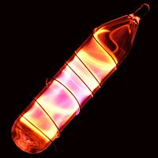

Numero atomico: 10
Massa atomica: 20,18
Temperatura di fusione (°C): -249
Temperatura di ebolizione (°C): -246
Energia di prima ionizzazione (kj/mol): 2081
Elettronegatività (secondo Pauling): --
Densità: 0,90
Numeri di ossidazione: --
Configurazione elettronica: 1s2, 2s2, 2p6
Maggiori Informazioni